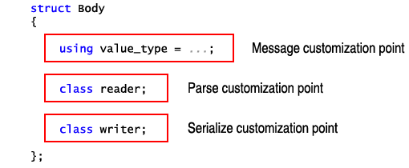

|


The message Body
template parameter controls both the type of the data member of the resulting
message object, and the algorithms used during parsing and serialization.
Beast provides three very common Body
types:
empty_body: An empty
message body. Used in GET requests where there is no message body. Example:
request<empty_body> req; req.version = 11; req.method = "GET"; req.url = "/index.html";
string_body: A body
with a value_type as
std::string. Useful for quickly putting
together a request or response with simple text in the message body (such
as an error message). Has the same insertion complexity of std::string. This is the type of body used
in the examples:
response<string_body> res; static_assert(std::is_same<decltype(res.body), std::string>::value); res.body = "Here is the data you requested";
streambuf_body: A
body with a value_type
of streambuf:
an efficient storage object which uses multiple octet arrays of varying
lengths to represent data.
User-defined types are possible for the message body, where the type meets
the Body
requirements. This simplified class declaration shows the customization points
available to user-defined body types:

value_type:
Determines the type of the message::body member. If this type defines
default construction, move, copy, or swap, then message objects declared
with this Body
will have those operations defined.
reader:
An optional nested type meeting the requirements of Reader.
If present, this defines the algorithm used for parsing bodies of this
type.
writer:
An optional nested type meeting the requirements of Writer.
If present, this defines the algorithm used for serializing bodies of
this type.
The examples included with this library provide a Body implementation that serializing message bodies that come from a file.